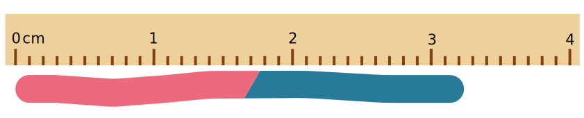
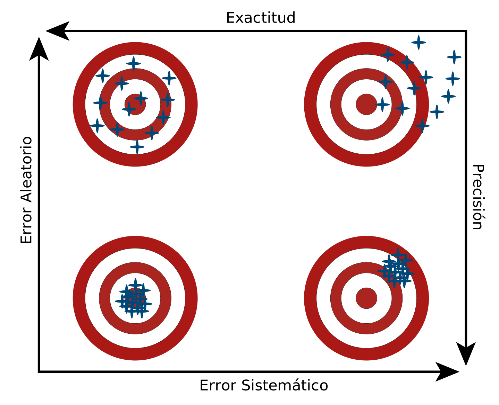

Análisis de error, regresión y ajustes no lineales
El objetivo de este laboratorio es el de analizar la propagación de errores dadas variables con medidas e incertidumbres. Así mismo también se prentenden realizar regresiones lineales y linealización por medio de las herramientas de Excel junto con una tabulación y gráficas de los datos usados.
Estimación del Error
Desde el primer momento en el que la palabra medida aparece en el contexto de la física, esta viene de la mano con el concepto de error. Desde el primer momento en el que usamos un instrumento de medición común como lo pueden ser una regla, un cronómetro o un termómetro, el error asociado a estos instrumentos de medición aparece. Este error se asocia con la escala a través de la cuál se definen las medidas en dicho instrumento. Un ejemplo que puede ilustrar la aparición del error en una medida cotidiana se puede observar en la siguiente ilustración:
Figura 1: Medida de la longitud de una gusanito de goma.
En este caso en partícular podemos ver que el gusanito de goma tiene una longitud aproximada de \(3.2\,cm\). Sin embargo la cabeza del gusanito llega hasta un poco más allá de la marca de los \(3.2\,cm\). Esto implica que no podemos tener una certeza completa en la medida del gusanito, pero si podemos establecer un rango a través del cual se puede encontrar la longitud exacta. Este rango se puede establecer a través del error en la medida. Sabiendo que la mínima unidad que se puede medir con precisión en la regla es \(1\,mm = 0.1\,cm\) entonces la medida de la longitud \(l\) del gusanito se puede expresar como $$l = (3.20 \pm 0.05)\,cm,$$ donde el \(0.05\,cm = (0.1/2)cm\) hace referencia a que el error en una sola medida tomada generalmente con un instrumento análogo se toma como la mitad de la mínima unidad que es posible medir. Es importante hacer énfasis en que se agregó un cero en los decimales de \(l\), ya que la medida debe tener el mísmo número de posiciones decimales que el error.
Otro ejemplo que es posible de plantear es la medición del grosor de un libro, ubicado en estante horizontal con 10 libros iguales. Si una persona mide el largo del estante con una regla similar a la de la Figura 1 obtiene una medida de, por ejemplo, de \(29.3\,cm\). Esto implica que la longitud \(L\) del estante es $$L = (29.30\,\pm 0.05)cm. $$ Pero ya que queremos encontrar el grosor \(l\) de cada libro, entonces este se puede encontrar de la siguiente manera: $$l = \frac{L}{10} = (2.930\pm 0.005)cm. $$ Se observa cómo midiendo el grosor de 10 libros (que en esencia es la longitud del estante), puedo disminuir el error en la medida del grosor de uno solo.
Errores en múltiples mediciones
También se puede reducir el error tomando multiples medidas. Si nos devolvemos al caso del libro, supongamos que medimos 10 veces distitas el grosor de un solo libro y obtuvimos los siguientes datos: $$2.9\,cm,\, 2.9\,cm,\, 2.9\,cm,\, 2.9\,cm,\, 2.8\,cm,\, 2.9\,cm, 2.9\,cm,\, 2.9\,cm,\, 2.8\,cm,\, 2.9\,cm.$$ En el caso en el que tenemos múltiples datos, el mejor estimado de la medida es el promedio. Si \(l_i\) son las medidas de los grosores puestos anteriormente (con \(i=1,2,3,...,10\)), entonces el promedio \(\bar{l}\) se define como $$\bar{l} = \frac{1}{N}\sum_{i=1}^{N}l_i,$$ donde \(N\) es el número de datos tomados. El error \(\delta_l\) asociado a esta medida se puede estimar a través de la expresión presentada a continuación: $$\delta_l = \frac{\sigma}{\sqrt{N}},$$ donde \(\sigma\) es conocida como la desviación estandar del conjunto de datos, definida como $$\sigma = \sqrt{\frac{1}{N}\sum_{i=1}^{N}(l_i - \bar{l})^2}.$$ La desviación estandar permite darnos una idea de qué tan alejados están los datos del promedio, de forma que nos brinda una idea de lo que en principio representa el error. Con esto en mente, la medida completa del grosor \(l\) del libro será $$l = \bar{l} \pm \delta_l. $$ En el ejemplo planteado, se puede encontrar que \(\bar{l} = 2.88\,cm\) y \(\sigma = 0.0421637\), de forma que la medida total del grosor del libro es $$l = (2.88000000000 \pm 0.01333333266)cm.$$ Si aumentáramos el número de mediciones \(N\) tanto la desviación estandar como el error disminuirían, de forma que a través de la toma de una cantidad considerable de datos podemos tener una medida más exacta.
Errores Aleatorios y Sistemáticos. Precisión y Exactitud
Anteriormente se usaron expresiones como medida exacta y precisión sin tener presente su significado. Sin embargo estas tienen un papel importante al entender la manera en la que nuestros datos se comportan. Cuando queremos obtener cierta medida, lo ideal es que sea tanto precisa como exacta, pero dependiendo de factores externos o errores humanos en la medición esto puede cambiar. También debido a estos mismos motivos los errores pueden ser de distinto tipo, ya sean aleatorios o sistemáticos. Un ejemplo que podría mostrar de forma un poco más clara estos conceptos es el de una persona lanzando dardos a un blanco fijo, como se muestra a continuación:
Figura 2. Representación de Exactitud, Precisión, Error Aleatorio y Error Sistemático. Las direcciones de las flechas indican la dirección en la cual aumentan los valores de la variables asociadas a su respectivo eje.
En la imágen se puede observar cómo en los dos blancos superiores los dardos se encuentran en posiciones muy alejadas entre si, mientras que los dos inferiores pasa exactamente lo contrario. Esta dispersión de los dardos es medida por la precisión de las posiciones, de forma que un conjunto de dardos muy dispersos entre si muestra mucha precisión, mientras que un conjunto menos disperso muestra lo opuesto. Cabe resaltar que la precisión no depende de que la persona clave los dados lo más cerca posible al centro, sino de qué tan dispersos están estos. Por otra parte, la exactitud si depende de la tendencia de que los datos estén cerca del valor ideal. En este caso en particular depende de qué tanto tienden las posiciones de los dardos a estar cerca del centro. En el caso de los blancos a la derecha hay poca exactitud debido a que las posiciones de los dardos no se encuentran alrededor del centro. Lo contrario ocurre con los blancos a la izquierda.
En cuanto a los errores, el ejemplo más claro de error aleatorio se encuentra en el blanco superior-izquierdo. En este blanco solo dos dardos están en el centro, mientras que los demás se distribuyen aleatoriamente por todo el tablero. Generalmente cuando se habla de errores aleatorios se trata de eventos en los cuales podemos tanto subestimar como sobreestimar una medida. Un ejemplo en el que este tipo de errores aparece puede ser la medición de un objeto con una regla. Debido a que la regla tiene asociada cierta incertidumbre, a veces podemos obtener una medida más grande que la correcta, como también a veces podemos obtener una más pequeña. Respecto al error sistemático el ejemplo más claro es el blanco inferior derecho. En este todos los dardos cayeron alejados del centro en una región muy concreta del tablero, al contrario que lo que ocurre con el blanco superior izquierdo. En general los errores sistemáticos se presentan cuando solo sobreestimamos una medida o solo la subestimamos, pero nunca ambas. Un ejemplo es la medición del tiempo con un cronómetro. Debido a que, como humanos, tardamos un poco en parar el cronómetro para obtener el tiempo transcurrido de un evento, siempre obtendremos un tiempo un poco superior al verdadero, de forma que estaremos sobreestimando cada medida.
Propagación de errores
Generalmente, una vez hayamos obtenido un conjunto de medidas en el laboratorio, estas pueden relacionarse entre si para formar una nueva medida. Un ejemplo muy sencillo puede ser la medición de la velocidad de un objeto. Si queremos medir la velocidad media de un objeto lo único que debemos saber es qué tanta distancia \(d\) recorrió y en cuánto tiempo \(t\) lo hizo. Supongamos que \(d = (5.34 \pm 0.05)cm\) y \(t = (1.2 \pm 0.5)s\). La velocidad media \(v\) se define como \(v = \frac{d}{t}\), de forma que podríamos pensar que \(v = \frac{(5.34 \pm 0.05)cm}{(1.2 \pm 0.5)s}\). Sin embargo esta medida de \(v\) no tiene la forma común con la que debemos reportar un dato (\(v = \bar{v} \pm \delta_v\)). Entonces, ¿Qué podríamos hacer en este caso? para esto justamente existe el concepto de propagación del error en una medida. Asumiendo que todas las medidas (\(x,y,z,...\)) que se toman en el laboratorio están asociadas con errores aleatorios y que algunas de las variables que necesitemos se pueden escribir como funciones (\(f(x,y,z,...)\)) de otras variables ya medidas, entonces el error en la medida de \(f\), que llamaremos \(\delta_f\), será: $$\delta_f = \sqrt{\Big(\frac{\partial f}{\partial x}\delta_x\Big)^2 + \Big(\frac{\partial f}{\partial y}\delta_y\Big)^2 + \Big(\frac{\partial f}{\partial z}\delta_z\Big)^2 + \cdots}.$$
Puede que algunos de los lectores no estén familiarizados con las derivadas parciales o incluso con el concepto de derivada, así que se dará una rápida explicación de esto. Por el momento y solo para cumplir con lo que se espera hacer en este curso, pueden ver la derivada de una función \(f(x)\), que denotaremos \(\frac{df(x)}{dx}\) como una operación que cumple con las siguientes reglas:
\(\displaystyle \frac{d}{dx}(x^{n}) = n x^{n-1}\), con \(n\) un número real.
\(\displaystyle \frac{d}{dx}(C) = 0\), con \(C\) una constante.
\(\displaystyle \frac{d}{dx}(\cos(x)) = -\sin(x)\)
\(\displaystyle \frac{d}{dx}(\sin(x)) = \cos(x)\)
\(\displaystyle \frac{d}{dx}(\ln(x)) = \frac{1}{x}\)
\(\displaystyle \frac{d}{dx}(f(x) + g(x)) = \frac{df}{dx} + \frac{dg}{dx}\), con \(f\) y \(g\) funciones.
\(\displaystyle \frac{d}{dx}(Cf(x)) = C\frac{df}{dx}\)
\(\displaystyle \frac{d}{dx}(f(x)g(x)) = \frac{df}{dx}g + f\frac{dg}{dx}\)
\(\displaystyle \frac{d}{dx}\Big(\frac{f(x)}{g(x)}\Big) = \frac{\frac{df}{dx}g - f\frac{dg}{dx}}{g^2}\)
Por otra parte, una derivada parcial \(\frac{\partial f}{\partial x}\) es también una derivada y cumple con las mismas reglas ya vistas. Sin embargo sirve en caso de que \(f\) no dependa de una sola variable \(x\) sino de más. La particularidad de la derivada parcial es que si se deriva una fucnión de varias variables respecto a una sola, las demás se comportan como constantes. Por ejemplo, si \(f(x,y) = x \ln(y)\) entonces $$\frac{\partial f}{\partial y} = \frac{\partial}{\partial y}(x\ln(y)) = x \frac{\partial \ln(y)}{\partial y} = x \frac{1}{y} = \frac{x}{y}.$$ Como tal vez pudieron observar, la variable \(x\) salió de la derivada como si fuera una constante, ejemplificando la particularidad que ya se nombró de la derivada parcial. Volviendo al ejemplo de la velocidad, sabemos que \(d = (5.34 \pm 0.05)cm\) y \(t = (1.2 \pm 0.5)s\). El valor de \(\bar{v}\) lo podemos hallar simplemente como $$\bar{v} = \frac{5.34\, cm}{1.2\,s} = 4.45\, \frac{cm}{s}.$$ Por otra parte, sabemos que \(v = \frac{d}{t}\), de forma que podemos ver a la velocidad como una función de dos variables, que son la distancia recorrida \(d\) y el tiempo \(t\). Esto implica que el error es: $$\delta_v = \sqrt{\Big(\frac{\partial v}{\partial d}\delta_{d}\Big)^2 + \Big(\frac{\partial v}{\partial t}\delta_{t}\Big)^2},$$ donde \(\delta_d = 0.05\,cm\) y \(\delta_t = 0.5\,s\). Las derivadas parciales que necesitamos obtener son:$$\frac{\partial v}{\partial d} = \frac{\partial}{\partial d}\Big(\frac{d}{t}\Big) = \frac{1}{t} \frac{\partial d}{\partial d} = \frac{1}{t} \frac{\partial d^1}{\partial d} = \frac{1}{t} (1 d^{1-1}) = \frac{1}{t} (1 d^{0}) = \frac{1}{t} $$ y $$\frac{\partial v}{\partial t} = \frac{\partial}{\partial t}\Big(\frac{d}{t}\Big) = d\frac{\partial}{\partial t}\Big(\frac{1}{t}\Big) = d\frac{\partial t^{-1}}{\partial t} = d(-1t^{-1-1}) = d(-1t^{-2}) = -\frac{d}{t^2}. $$ De esta manera el error en la velocidad es: $$\delta_v = \sqrt{\Big(\frac{1}{t}\delta_{d}\Big)^2 + \Big(-\frac{d}{t^2}\delta_{t}\Big)^2}.$$ Reemplazando \(d = 5.34\,cm\) y \(t = 1.2\,s\) se encuentra que \(\delta_v = 1.854634772\, \frac{cm}{s}\). Podemos aproximar este valor a \(1.8546\, \frac{cm}{s}\) por ejemplo (si nos piden un error a 4 cifras significativas o 4 decimales) y entonces la medida de la velocidad sería \(v = (4.4500 \pm 1.8546)\frac{cm}{s}\). De esta forma pudimos encontrar el error en una medida que depende de varias variables.
Regresión lineal y linealización
Supongan que obtuvieron varios datos de dos variables \(x\) y \(y\). Estos datos estarán representados son \((x_1,x_2,...,x_{N})\) y \((y_1,y_2,...,y_{N})\), donde \(N\) es el número de datos que tomaron. Ahora supongan que quieren encontrar una función \(y(x)\) que se ajuste a estos puntos (que pase por esos puntos lo mejor posible). Para hacerlo existe un método llamado ajuste por mínimos cuadrados, que aunque puede ser muy útil, no será explicado por el momento dado que acarrea cierta dificultad. Sin embargo un caso muy útil que pueden encontrar es el ajuste de ciertos puntos a una línea recta. Suponga que \(y(x) = mx + b\), donde \(m\) es la pendiente de la recta y \(b\) el corte de la recta con el eje vertical. A partir de un ajuste con mínimos cuadrados es posible encontrar que los valores de \(m\) y \(b\) junto con sus respectivas incertidumbres (errores) \(\sigma_m\) y \(\sigma_b\) son:
\(\displaystyle m = \frac{N\sum_{i=1}^{N}x_iy_i - b\sum_{i=1}^{N}x_i\sum_{i=1}^{N}y_i}{N\sum_{i=1}^{N}x^2_i - \Big(\sum_{i=1}^{N}x_i\Big)^2}\)
\(\displaystyle b = \frac{\sum_{i=1}^{N}y_i\sum_{i=1}^{N}x^2_i - \sum_{i=1}^{N}x_i\sum_{i=1}^{N}x_iy_i}{N\sum_{i=1}^{N}x^2_i - \Big(\sum_{i=1}^{N}x_i\Big)^2}\)
\(\displaystyle \sigma_m = \sqrt{\frac{N\sum_{i=1}^{N}(y_i - mx_i - b)^2}{(N-2)\Big(N\sum_{i=1}^{N}x^2_i - \Big(\sum_{i=1}^{N}x_i\Big)^2\Big)}}\)
\(\displaystyle \sigma_b = \sqrt{\frac{N\sum_{i=1}^{N}x_i^2\sum_{i=1}^{N}(y_i - mx_i - b)^2}{N(N-2)\Big(N\sum_{i=1}^{N}x^2_i - \Big(\sum_{i=1}^{N}x_i\Big)^2\Big)}}\)
Adicional a esto, en cada ajuste siempre hay un coeficiente \(r\) aosciado a este, que nos dice qué tanto la función matemática que encontramos se ajusta a los datos experimentales tomados. Este coeficiente toma valores desde 0 hasta 1, donde 0 indica que la función matemática no se ajusta de ninguna forma a nuestros datos y 1 que el ajuste es perfecto. Un valor de \(r > 0.9\) se considera excelente aunque no perfecto. Una vez teniendo los parámetros de ajuste especificados para una recta podremos ajustar cualquier conjunto de puntos a una. Sin embargo la recta no es la única curva que existe y esto podría limitar mucho nuestros ajustes. Para solucionar este problema existe un método conocido como linealización que permite convertir una función que en teoría no se parece en nada a una linea recta en una. Por ejemplo, supongan que obtuvimos un conjunto de puntos \((x_1,...,x_N)\) y \((y_1,...,y_N)\) y sabemos que debemos ajustarlos a una función \(y(x) = a\ln(x) + b\) para poder encontrar los valores de \(a\) y \(b\). En teoría esta función no parece una línea recta. Sin embargo, si decidimos llamar \(z = \ln(x)\) entonces la función se convertirá en \(y(z) = az + b\), que es la ecuación de una línea recta. Claramente si hacemos esto, los puntos que debemos ajustar a una recta no deben ser \((x_1,...,x_N)\) y \((y_1,...,y_N)\) sino \((z_1,...,z_N)\) y \((y_1,...,y_N)\), donde \((z_1,...,z_N) = (\ln(x_1),...,\ln(x_N))\).
El proceso de ajustar un conjunto de puntos a una recta puede verse un poco tedioso y puede que el tiempo del laboratorio no sea el suficiente para ahcer este proceso a mano. Sin embargo Pivot permite ajustar un cierto conjunto de puntos a una recta o incluso a otras funciones comunes. El tutoríal de cómo hacerlo se encunetra en la página de este curso, en Recursos \(to\) Herramientas de Software \(to\) Ayudas de Pivot, en el tutorial acerca de cómo usar tablas de datos y cómo obtener gráficas a partir de ellas.